Drag and drop scene files, name your project, and pick up where you left off from the project list.
Set flight and camera parameters with presets and instant validation before calculation starts.
Explore the scene in 3D with an axis gizmo and a control panel to adjust what is displayed.
Inspect and edit viewpoint coordinates, and see each camera frustum to check what is covered.
Browse the waypoint list, edit positions in detail, and undo or redo changes with shortcuts.
List collisions in a table and highlight the affected buildings directly in the scene.
Get suggested replacement positions for colliding waypoints, then accept or reject each fix.
Track safety details, key metrics, and a mission overview with clear safe and warning status.
Replay the mission on a timeline, jump to any waypoint, and change the playback speed.